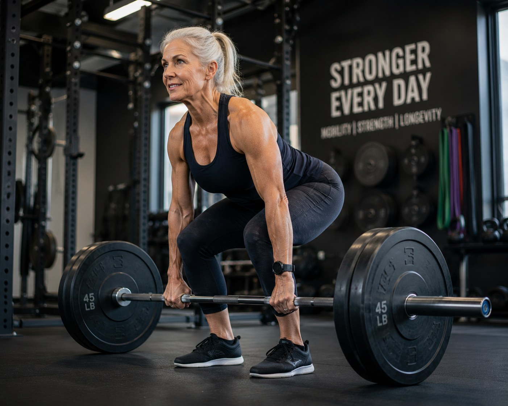

The pillars of recovery.
These principles apply to most athletic injuries, whether treated nonoperatively, with injections, or after surgery.
Sleep
Sleep is when tissue repair, hormone regulation and nervous system recovery happen. Protect it like part of the treatment plan.
Protein & Nutrition
Protein supports muscle and tendon recovery. Avoid aggressive dieting during demanding rehabilitation unless medically directed.
Hydration
Hydration matters in the desert. Dehydration can worsen fatigue, cramps, recovery and training quality.
Mobility
Restore safe motion without forcing tissue that needs protection. Progress depends on diagnosis and phase of healing.
Strength
Progressive loading rebuilds capacity. Too little loading delays progress; too much loading causes setbacks.
Progressive Return
Return to sport should follow milestones, not just calendar time.

Recovery timeline mindset.
Every injury has a different timeline. The common mistake is using pain alone as the signal. Pain may improve before tissue capacity, strength, balance, confidence and sport-specific control have returned.
- Early phase: protect tissue and reduce irritability.
- Middle phase: restore motion, strength and normal movement patterns.
- Late phase: build power, endurance, agility and sport-specific confidence.
- Return phase: controlled exposure to real sport demands.
Return-to-sport checkpoints.
Recovery FAQ.
Should I rest completely after injury?
Sometimes short-term rest is appropriate, but complete rest for too long can cause stiffness and deconditioning. Most recovery plans use relative rest: protect the injury while keeping safe movement.
Should soreness stop me from training?
Not all soreness is dangerous. Worsening pain, swelling, limping, instability, loss of motion or pain that changes mechanics should prompt modification or evaluation.
When should I start physical therapy?
Timing depends on the diagnosis. Some injuries benefit from early therapy; others need a protection period first. Follow your physician's protocol after surgery.
Can I cross-train while recovering?
Often yes. Safe cross-training can maintain fitness while protecting the injured tissue. The best option depends on the injury and stage of recovery.
What slows recovery?
Poor sleep, inadequate nutrition, nicotine, uncontrolled medical conditions, overtraining, skipping rehab, and returning too fast can all slow recovery.
Need a rehab plan?
Start with a diagnosis, then build a recovery plan that fits your sport and goals.